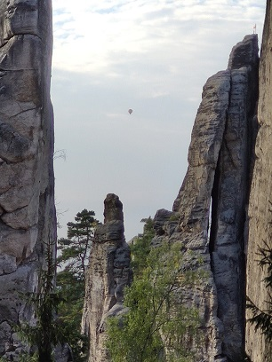
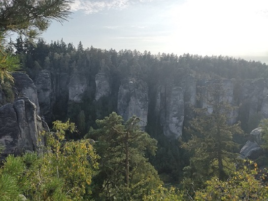

Adam Ondra (* 5. února 1993, Brno) je český lezec, olympionik, čtyřnásobný mistr světa, který se již ve dvanácti letech zařadil mezi deset nejlepších světových lezců na obtížnost.
Přes deset let vede žebříčky skalních lezců a světová média jej nazývají českou senzací sportovního lezení.
| Jméno | Příjmení | Věk |
|---|---|---|
| Adam | Ondra | 28 |
| Karel | Loudavý | 100 |
| Jakub | Škaroupka | 25 |
Prachovské skály jsou pískovcová skalní oblast, přírodní rezervace a součást Chráněné krajinné oblasti Český ráj, která se rozkládá zhruba
5 až 7 km severozápadně od Jičína.
 